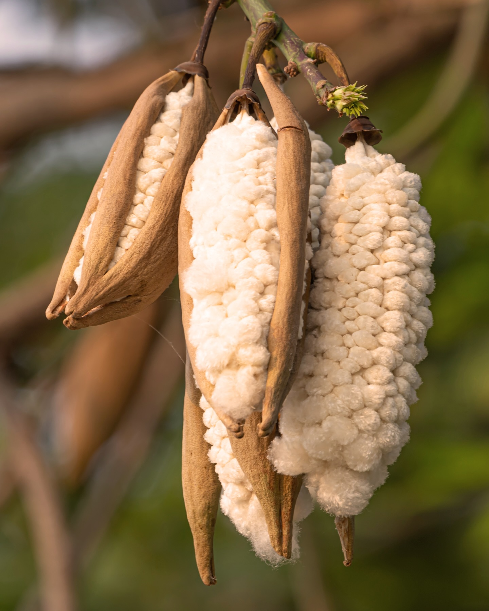

Mattresses and bolsters
Traditional cotton-and-filler cotton mattresses, futons, floor cushions and bolsters. Loft that holds up under weight, and a fibre that can be re-carded and refilled rather than thrown out.
GENCOTT contracts and cleans organic tree cotton - filler cotton, picked by hand from standing groves. It leaves us as cleaned, de-seeded fill for mattresses, pillows, cushions and soft toys. It cannot be spun into yarn, and we do not pretend otherwise.


Most tree cotton reaches a mattress maker through two or three intermediaries, arriving as a sack of fibre with no idea where it grew or what is mixed into it. We contract the crop before the season and clean it ourselves, so there is nobody in between to take a margin or lose the paperwork.
The crop is tree cotton - a woody perennial that stands for decades rather than being ploughed in and resown, grows rain-fed on marginal ground, and opens its bolls over four to six weeks. It has been used to stuff pillows and mattresses in India for as long as anyone has been making them.
Then it goes across our weighbridge, into the drying yard, and onto the de-seeding and cleaning line. What comes out is baled, tested and sold. We do not spin, we do not weave, and we have no ambition to.
One fibre, de-seeded and cleaned, pressed into bales or bagged loose. Here is what our customers do with it.
Traditional cotton-and-filler cotton mattresses, futons, floor cushions and bolsters. Loft that holds up under weight, and a fibre that can be re-carded and refilled rather than thrown out.
Pillows, meditation cushions, upholstery padding and seat squabs. Light, breathable and springy, with none of the heat build-up of a solid foam core.
Stuffing for soft toys and dolls, and batting for quilts and comforters. Supplied cleaned and opened, in bag sizes that suit a workshop rather than a warehouse.
A cotton tree stays in the ground for decades. Nothing is ploughed, nothing is replanted, and the bolls are taken by hand off the branch as each one splits.
Tree cotton is not a cheap substitute for spinning cotton. It is a different fibre with a different job - a soft, short fibre that fills a volume rather than one that makes a thread.
| Property | Our tree cotton fill | Polyester fibrefill | Foam |
|---|---|---|---|
| Origin | Natural, perennial crop | Petrochemical | Petrochemical |
| Form supplied | Loose cleaned fibre | Loose or batted | Sheet or crumb |
| Can be spun | No | Yes | No |
| Breathability | High | Moderate | Low |
| Refill and repair | Re-card and top up | Replace | Replace |
| End of life | Composts | Does not | Does not |
Indicative ranges from our own seasonal testing. Lot-specific data ships with every consignment.
We would rather lose the enquiry than have a lorry come back. If your process needs any of the following, tree cotton is the wrong material and we will tell you so.
The fibre is short, smooth and brittle, and it has no natural crimp to grip its neighbours. It will not hold together as a yarn on any system, hand or machine. No thread, no fabric, no garments.
We sell it undyed, to go inside a cover. Dyeing loose fill is not something we do and not something we would recommend; if you need a coloured fill, this is not it.
Loose fibre is dusty to handle and readily flammable untreated. It needs enclosed filling stations, and finished goods must meet their own flammability rules - which is your test, not ours.
The whole chain we are responsible for fits on one line. Everything after the bale is somebody else's expertise.
Every stage from picking to despatch runs at our own site. Nothing is bought in and blended, and nothing is sold before it has been through the test bench.
We contracted the crop, we cleaned it, and we are selling it. One counterparty, one set of documents, and one place to call when something is wrong.
Bulk density, moisture and trash content on every lot from our own bench, plus annual testing for restricted substances at an accredited external laboratory.
We publish the premium paid to growers each season. No broker layer means your cost is the crop, the cleaning and our margin - nothing else.
Seed and shell left in the fibre is the commonest complaint in this trade. Ours runs under 1.5% by weight, and the figure for your lot is on the docket.
Transaction certificate, test report, weighbridge slip and scope certificates with every consignment, as standard rather than on request.
Contracts against the coming crop open in July, which is how our repeat customers secure their tonnage before the season starts.
Mattresses, pillows, toys or quilts, how much you need and when. If you are not sure the fibre suits your filling line, describe the end product and we will say so honestly.
A written price valid for 30 days with lead time and Incoterms, and a 2 kg sample from the lot we are offering you, with its test report.
Sign the proforma invoice and we reserve the tonnage against the season's crop. Forward contracts against the coming crop open in July.
Loaded at the mill, with the document pack and the lot's test report travelling with the goods.
Say what you are making and how much you need. You will get a price, a lead time, a sample and the test report for the lot.